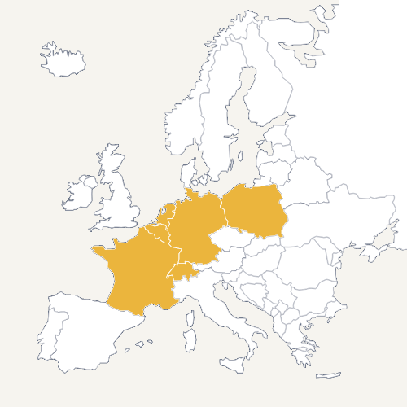

Bonam Curam łączy operacje, technologię, medycynę, prawo i finanse w jeden spójny model dla sektora senioralnego — od diagnozy, przez finansowanie, po optymalizację i rynek europejski.
W Konsorcjum Senioralnym Bonam Curam wierzymy, że współpraca międzynarodowa jest kluczem do tworzenia innowacyjnych rozwiązań dla seniorów w całej Europie. Łącząc zasoby i doświadczenie naszych partnerów z różnych krajów, budujemy mosty między kulturami i technologiami, aby wspólnie podnosić standardy opieki senioralnej.
Nasze zaangażowanie w rozwój nowych technologii pozwala wdrażać nowoczesne systemy opieki, które zwiększają komfort i bezpieczeństwo seniorów. Wspólna reprezentacja na międzynarodowych targach i konferencjach umożliwia prezentację osiągnięć, wymianę wiedzy oraz nawiązywanie strategicznych partnerstw.
Dołączając do konsorcjum, stajesz się częścią dynamicznej sieci współpracy, która przekracza granice i tworzy przyszłość opieki senioralnej w Europie. Razem możemy więcej — dla dobra naszych seniorów i społeczeństwa.
